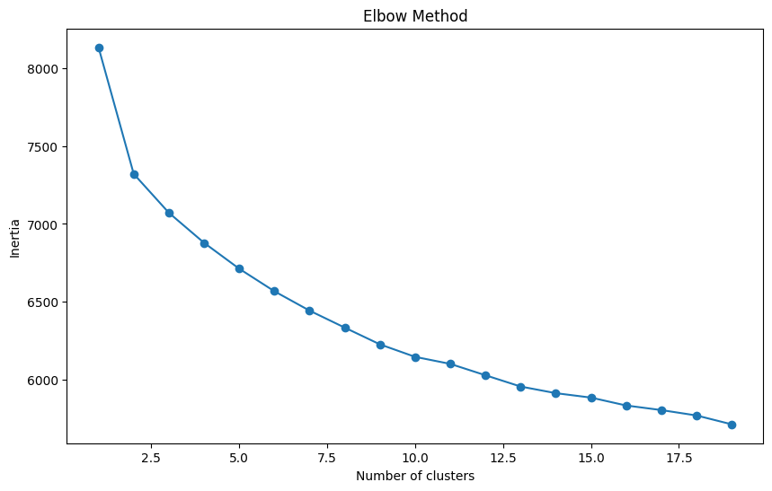
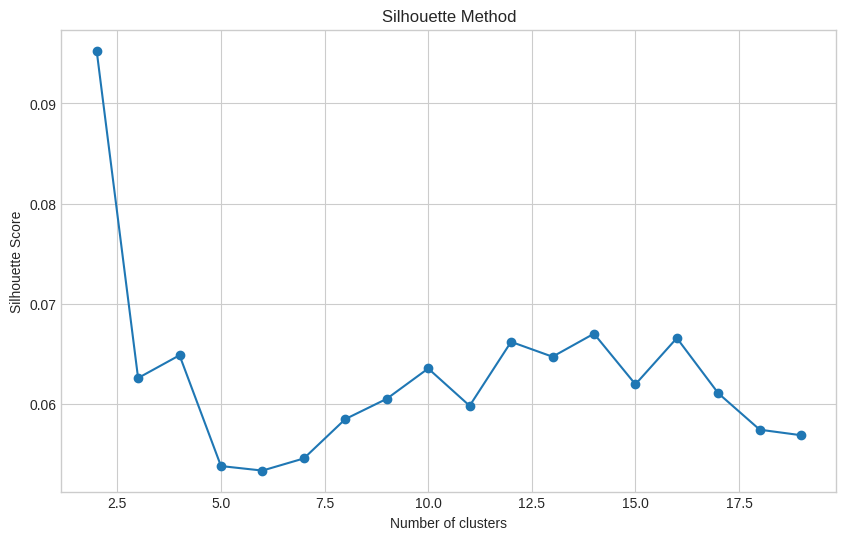

import pandas as pd
# Load the CSV file
memespector_file = "/content/drive/MyDrive/2024-01-09-Bauernproteste/2024-01-11-Google-Vision-All.csv"
df = pd.read_csv(memespector_file)
df = df[['Image_BaseName', 'GV_Label_Descriptions']]
# Splitting the 'GV_Label_Descriptions' into individual labels
split_labels = df['GV_Label_Descriptions'].str.split(';').apply(pd.Series, 1).stack()
split_labels.index = split_labels.index.droplevel(-1) # to line up with df's index
split_labels.name = 'Label'
# Joining the split labels with the original dataframe
df_split = df.join(split_labels)
# Creating a matrix of True/False values for each label per Image_BaseName
matrix = pd.pivot_table(df_split, index='Image_BaseName', columns='Label', aggfunc=lambda x: True, fill_value=False)
# Resetting the column headers to be the label names only
matrix.columns = [col[1] for col in matrix.columns.values]
# Now 'matrix' has a single level of column headers with only the label namesmatrix| Adaptation | Advertising | Afterglow | Agricultural machinery | Agriculture | Air travel | Aircraft | Airliner | Airplane | Alloy wheel | ... | Vertebrate | Water | Water resources | Wheel | Whiskers | White | Window | Wood | Working animal | World | |
|---|---|---|---|---|---|---|---|---|---|---|---|---|---|---|---|---|---|---|---|---|---|
| Image_BaseName | |||||||||||||||||||||
| 6750551853789891846.jpg | False | False | False | False | False | False | False | False | False | False | ... | False | False | False | False | False | False | False | False | False | False |
| 6750761577349254405.jpg | False | False | False | False | False | False | False | False | False | False | ... | False | False | False | False | False | False | False | False | False | False |
| 6751467034741067014.jpg | False | False | False | False | True | False | False | False | False | False | ... | False | False | False | False | False | False | False | False | False | False |
| 6763591353164254469.jpg | False | False | False | False | False | False | False | False | False | False | ... | False | False | False | False | False | False | False | False | False | False |
| 6766552734108749062.jpg | False | False | False | False | False | False | False | False | False | False | ... | False | False | False | False | False | False | False | False | False | False |
| ... | ... | ... | ... | ... | ... | ... | ... | ... | ... | ... | ... | ... | ... | ... | ... | ... | ... | ... | ... | ... | ... |
| 7321800737606896928.jpg | False | False | False | False | False | False | False | False | False | False | ... | False | False | False | False | False | False | False | False | False | False |
| 7321804342179204384.jpg | False | False | False | False | False | False | False | False | False | False | ... | False | False | False | False | False | False | False | False | False | False |
| 7321804909290999045.jpg | False | False | False | False | False | False | False | False | False | False | ... | False | False | False | True | False | False | False | False | False | False |
| 7321806774967815457.jpg | True | False | False | False | False | False | False | False | False | False | ... | False | False | False | False | False | False | False | False | False | False |
| 7321806890906701089.jpg | False | False | False | False | False | False | False | False | False | False | ... | False | False | False | False | False | False | False | False | False | False |
982 rows × 681 columns
from sklearn.decomposition import PCA
from sklearn.cluster import KMeans
import matplotlib.pyplot as plt
import numpy as np
# Ensuring that 'Image_BaseName' is not part of the matrix to apply PCA
image_base_names = matrix.index # Saving the image base names for later use
label_matrix = matrix.values # Convert to numpy array for PCA
# Dimensionality reduction using PCA
# Considering a variance ratio of 0.95 to determine the number of components
pca = PCA(n_components=0.95)
matrix_reduced = pca.fit_transform(label_matrix)
# If needed, you can create a DataFrame from the PCA-reduced matrix and reattach the 'Image_BaseName' column
matrix_reduced_df = pd.DataFrame(matrix_reduced, index=image_base_names)matrix_reduced_df| 0 | 1 | 2 | 3 | 4 | 5 | 6 | 7 | 8 | 9 | ... | 232 | 233 | 234 | 235 | 236 | 237 | 238 | 239 | 240 | 241 | |
|---|---|---|---|---|---|---|---|---|---|---|---|---|---|---|---|---|---|---|---|---|---|
| Image_BaseName | |||||||||||||||||||||
| 6750551853789891846.jpg | 1.392793 | -0.851573 | -0.225060 | -0.630954 | 0.345822 | -0.313126 | 0.376667 | 0.370456 | -0.012519 | -0.898472 | ... | -0.007803 | 0.022912 | -0.002782 | 0.019272 | -0.005465 | -0.005129 | 0.011833 | 0.000200 | 0.006499 | 0.010995 |
| 6750761577349254405.jpg | -1.045212 | 0.139963 | -0.396712 | 0.505531 | -0.186165 | 0.278001 | 0.860551 | -0.387782 | -0.041959 | 0.146992 | ... | 0.020865 | 0.027422 | 0.064993 | 0.046791 | 0.042511 | -0.040843 | -0.091713 | -0.064683 | 0.043392 | -0.045372 |
| 6751467034741067014.jpg | 0.364738 | 0.089808 | 0.603463 | 0.717136 | 0.084382 | 0.130516 | 0.835040 | 0.056190 | -0.175465 | -0.551632 | ... | -0.009497 | 0.144801 | -0.020713 | 0.035502 | -0.085562 | -0.169911 | 0.083582 | 0.045916 | -0.123521 | 0.032273 |
| 6763591353164254469.jpg | 0.657532 | -0.007257 | -0.226448 | -0.142833 | -0.615043 | -0.208217 | -0.082478 | 0.181550 | 0.899774 | 0.462160 | ... | -0.025889 | 0.006257 | 0.060421 | 0.028564 | 0.045773 | 0.000179 | 0.003499 | 0.027838 | 0.007171 | -0.051516 |
| 6766552734108749062.jpg | 1.638604 | -0.418596 | -0.178993 | -0.522654 | 0.663303 | -0.186928 | 1.000894 | -0.307874 | -0.172688 | 0.336597 | ... | -0.009052 | -0.002043 | 0.007575 | -0.031553 | 0.007831 | -0.005779 | -0.023599 | -0.021165 | -0.000496 | -0.006467 |
| ... | ... | ... | ... | ... | ... | ... | ... | ... | ... | ... | ... | ... | ... | ... | ... | ... | ... | ... | ... | ... | ... |
| 7321800737606896928.jpg | -0.698156 | 0.191274 | -0.529836 | 0.047008 | 0.862388 | -0.111187 | -0.390502 | -0.089231 | 0.144091 | 0.326504 | ... | -0.015025 | -0.068188 | -0.023787 | 0.009343 | 0.004624 | 0.001396 | 0.097441 | 0.145987 | -0.102992 | 0.110626 |
| 7321804342179204384.jpg | 0.032051 | 0.048450 | 0.454149 | -0.012114 | 0.395014 | 0.128612 | 0.042362 | 1.019634 | -0.367217 | 1.025644 | ... | -0.002146 | -0.042328 | 0.114229 | -0.066740 | -0.051395 | -0.021397 | 0.012134 | 0.046365 | -0.005712 | 0.036329 |
| 7321804909290999045.jpg | 1.005015 | 0.923683 | 0.371054 | 0.533427 | 0.356759 | 0.813597 | 0.087288 | -0.289707 | 0.377865 | 1.242866 | ... | 0.005721 | 0.000672 | 0.021087 | 0.020260 | 0.037709 | 0.000290 | 0.015725 | 0.013237 | 0.018040 | -0.002060 |
| 7321806774967815457.jpg | -0.597974 | 0.855850 | -0.262498 | -0.214283 | -0.731812 | -0.209626 | -0.179683 | 0.529353 | -0.239506 | 0.048401 | ... | -0.012399 | 0.023383 | -0.073488 | 0.063523 | 0.013320 | 0.020351 | -0.033865 | 0.029809 | -0.080413 | -0.074329 |
| 7321806890906701089.jpg | -0.042383 | -0.138050 | 0.075564 | -0.396196 | 0.056236 | 0.612394 | -0.272538 | -0.230238 | -0.379339 | -0.668773 | ... | -0.106623 | -0.214393 | 0.209117 | 0.021869 | 0.220278 | 0.070092 | -0.198979 | 0.140981 | -0.004653 | -0.070667 |
982 rows × 242 columns
# Elbow method to determine optimal number of clusters
inertia = []
range_values = range(1, 20) # Checking for 1 to 10 clusters
for i in range_values:
kmeans = KMeans(n_clusters=i, n_init=10, random_state=0)
kmeans.fit(matrix_reduced_df)
inertia.append(kmeans.inertia_)
# Plotting the Elbow Curve
plt.figure(figsize=(10, 6))
plt.plot(range_values, inertia, marker='o')
plt.title('Elbow Method')
plt.xlabel('Number of clusters')
plt.ylabel('Inertia')
plt.show()
from sklearn.cluster import KMeans
from sklearn.metrics import silhouette_score
import matplotlib.pyplot as plt
# Define the range of clusters to try
range_values = range(2, 20)
silhouette_scores = []
# Perform k-means clustering and compute silhouette scores
for i in range_values:
try:
kmeans = KMeans(n_clusters=i, n_init=10, random_state=0)
kmeans.fit(matrix_reduced_df)
score = silhouette_score(matrix_reduced_df, kmeans.labels_)
silhouette_scores.append(score)
except Exception as e:
print(f"An error occurred with {i} clusters: {e}")
# Plotting the Silhouette Scores
with plt.style.context('seaborn-whitegrid'):
plt.figure(figsize=(10, 6))
plt.plot(range_values, silhouette_scores, marker='o')
plt.title('Silhouette Method')
plt.xlabel('Number of clusters')
plt.ylabel('Silhouette Score')
plt.show()
# Final k-means clustering using n clusters
kmeans_final = KMeans(n_clusters=11, n_init=10, random_state=0)
clusters = kmeans_final.fit_predict(matrix_reduced)
# Adding the cluster information back to the original dataframe
matrix['Cluster'] = clusters# Displaying the first few rows of the dataframe with cluster information
matrix.head()| Adaptation | Advertising | Afterglow | Agricultural machinery | Agriculture | Air travel | Aircraft | Airliner | Airplane | Alloy wheel | ... | Water | Water resources | Wheel | Whiskers | White | Window | Wood | Working animal | World | Cluster | |
|---|---|---|---|---|---|---|---|---|---|---|---|---|---|---|---|---|---|---|---|---|---|
| Image_BaseName | |||||||||||||||||||||
| 6750551853789891846.jpg | False | False | False | False | False | False | False | False | False | False | ... | False | False | False | False | False | False | False | False | False | 8 |
| 6750761577349254405.jpg | False | False | False | False | False | False | False | False | False | False | ... | False | False | False | False | False | False | False | False | False | 2 |
| 6751467034741067014.jpg | False | False | False | False | True | False | False | False | False | False | ... | False | False | False | False | False | False | False | False | False | 6 |
| 6763591353164254469.jpg | False | False | False | False | False | False | False | False | False | False | ... | False | False | False | False | False | False | False | False | False | 0 |
| 6766552734108749062.jpg | False | False | False | False | False | False | False | False | False | False | ... | False | False | False | False | False | False | False | False | False | 8 |
5 rows × 682 columns
!unzip /content/drive/MyDrive/2024-01-09-Bauernproteste/2024-01-09-Images-Clean.zip# Display the result. See linked notebook for code.